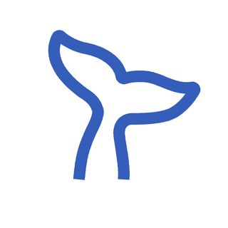

DSH STATUS ROTATOR
鲸鱼尾巴 · 动作预览
新增官方原版晃动，可勾选参与切换的动作。tok/s 调速从慢速起步，最高摇速可自行调整。
参与切换：
推荐速度默认用于官方动作的所有播放方式。其他动作使用下面的通用设置；关闭推荐后，官方动作也遵循这些设置。
官方原版默认 0.25 次/秒（4 秒一轮）；其他动作采用通用速度。
对照原始官方 GIF

150 帧 × 20ms = 3 秒。上方使用实际插件的 SVG 轮廓动画。
固定 0.33 次/秒时与原始素材同速；tok/s 最低档默认一轮约 1.5 秒。
可选一个固定动作，将概率设为 100%，再模拟调用观察切换和衔接。
随机模式每 4–8 秒选另一种动作，在衔接姿态处切换。预览放大了图标，实际状态行沿用宿主尺寸。